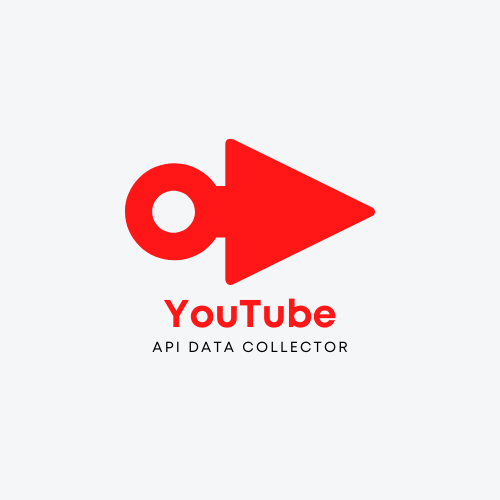

Python
Data Analysis
Most of my experience in Python has been creating programs and scripts that focus primarily on Data Analysis
I've been always interested in machine learning, data science, and sentiment analysis. I've worked on one program that works in conjunction with YouTube's own API to collect data for potential analysis. I've also worked on program that emulates sentiment analysis through a large wordlist called AFINN 1111 which determines the sentiment of text through this large wordlist.
